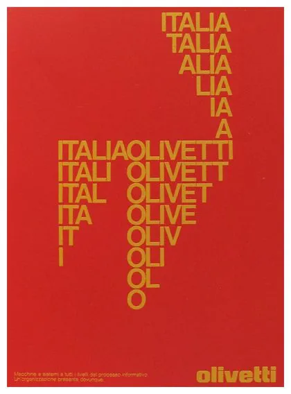

Walter Ballmer
Nato a Liestal, Svizzera, 1923. Si è diplomato alla Scuola di arti e mestieri di Basilea. Nel 1947, trasferitosi a Milano, inizia a collaborare con lo Studio Boggeri. Dal 1956 lavora per Olivetti disegnando numerosi manifesti, campagne pubblicitarie e il logo dell'azienda. Nel 1971 fonda Unidesign e continua a servire importanti clienti. Muore a Milano nel 2011.
Progetti

Stile Olivetti
Walter Ballmer, 1961
Manifesto

Lettera 32
Walter Ballmer, 1968
Manifesto

Olivetti
Walter Ballmer, 1975
Manifesto